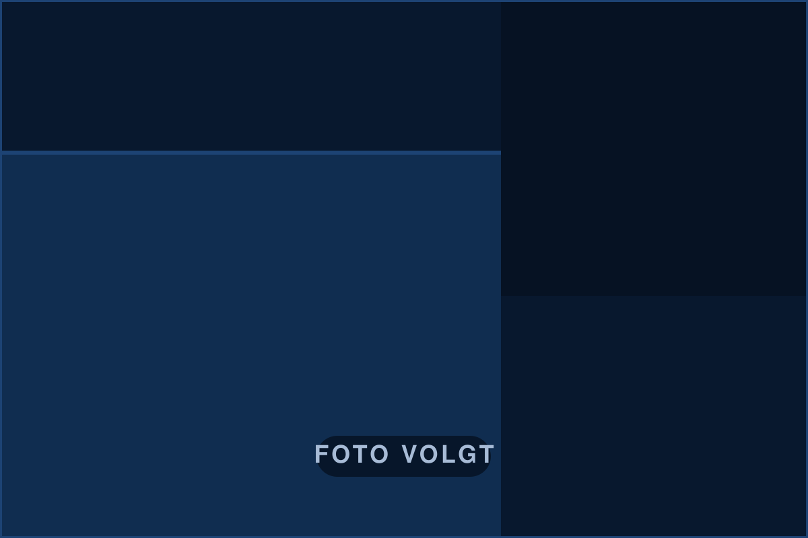

Ongeveer 25 jaar in dit vak
KISS marketing & sales is een Nederlandse B2C-salesorganisatie in Rijswijk. Wij werven en trainen telefonische salesteams en sturen ze aan voor uitgevers, loterijen, goede doelen en abonnementsorganisaties. De kern van het team werkt al circa zeventien jaar samen.
Begonnen op een zolderkamer
KISS heeft inmiddels ongeveer 25 jaar ervaring in telefonische B2C-sales. Het bedrijf is ooit begonnen op een zolderkamer en is daarna stap voor stap uitgegroeid tot de organisatie die er nu staat. Geen grote sprong, wel veel projecten. De huidige onderneming staat sinds 2014 bij de KvK ingeschreven; de kern van het team werkt al circa zeventien jaar samen.
In die 25 jaar hebben wij uiteenlopende telemarketingcampagnes uitgevoerd. Voor verschillende opdrachtgevers, doelgroepen en proposities, met steeds andere commerciële vraagstukken erachter. De waarde zit niet in het getal, maar in wat wij inmiddels weten.
Wat een campagne nodig heeft om van de grond te komen. Hoe een team wordt aangestuurd dat elke dag de telefoon pakt. Wanneer performance een incident is en wanneer een patroon. Welk probleem nu moet worden opgelost en welk probleem vanzelf overgaat. En hoe wordt opgeschaald zonder dat de kwaliteit meezakt.
Ervaring die telt
De ervaring zit in de mensen die de operatie aansturen. Wat dit team in eerdere campagnes is tegengekomen, hoeft u niet nog een keer te betalen.
- jaar in telefonische B2C-sales
- 25
- jaar werkt de kern van het team samen
- 17
- jaar managementervaring, samen
- 65
Informeel in de omgang, serieus over het werk
Binnen KISS werken collega's van ongeveer twintig tot zeventig jaar. Geen studentenbelvloer, geen stereotype callcenter. De sfeer is informeel en de lijnen zijn kort; u hoeft bij ons geen drie lagen door om iets geregeld te krijgen.
Zodra het over campagnes en resultaat gaat, verandert de toon. Dan tellen afspraken, cijfers en kwaliteit.
Mensen beter maken
Niet iedereen komt bij ons binnen als ervaren verkoper. Dat hoeft ook niet. Verkopen is een vak, en een vak is te leren: met training, veel praktijk, een supervisor die meeluistert en feedback die concreet genoeg is om de volgende dag iets mee te doen. Wie talent, motivatie en verantwoordelijkheid laat zien, kan doorgroeien. Recruitment, selectie en training doen wij in eigen huis.
Wij nemen niets voor lief
Een campagne die vandaag loopt, is geen garantie voor volgende maand. Elke opdracht moeten wij elke dag opnieuw waarmaken: kijken wat er werkelijk gebeurt in de gesprekken, wat werkt, wat niet, en wat wij deze week aanpassen. Onze manier van werken heet intern Keep it simple: een complexe salesoperatie begrijpelijk houden voor iedereen die ermee werkt.
Een salesorganisatie. Geen callcenter, geen uitzendbureau.
KISS verkoopt geen beluren. Wij bouwen commerciële capaciteit: een team dat namens uw merk verkoopt, met eigen recruitment, eigen training, supervisie op de vloer, kwaliteitsbewaking, compliance en rapportage uit eigen ontwikkeling. U koopt geen agents in; u krijgt een salesteam dat wij samenstellen, aansturen en verbeteren.
Alle agents zijn bij KISS in dienst. Geen zzp'ers, geen uitzendkrachten.
Wat KISS niet is: een klantenservicebedrijf dat ook wat verkoopt, een flexpool die mensen detacheert, of een belvloer die de goedkoopste wil zijn.
Wie KISS runt
Thomas van der GraafEigenaar/DirecteurEindverantwoordelijk voor KISS en het eerste aanspreekpunt voor nieuwe opdrachtgevers.Het eerste gesprek met een nieuwe opdrachtgever voert hij altijd zelf. ClaudiaChief Artificial Intelligence Patrick HessFinance & BackofficeLevert opdrachtgevers op elke werkdag de rapportages en data van de dag ervoor, en verzorgt facturatie en administratie. Tweede aanspreekpunt voor opdrachtgevers.Zorgt dat de cijfers op de factuur kloppen met de cijfers van de vloer. 
Toni ŠkuljIT & DevelopmentBouwt onze eigen software: rapportages, koppelingen en de gegevensuitwisseling met opdrachtgevers.Het rapport dat elke ochtend klaarstaat, heeft Toni gebouwd. 
Kim TurkenHR & ComplianceBewaakt dat elke campagne binnen de regels blijft en vindt de mensen die bij KISS passen.Zegt nee als iets niet mag, en welkom als iemand past. 
Sabrina DilloeFloormanagerStuurt supervisie aan en is na de start het operationele aanspreekpunt voor opdrachtgevers.Weet op elk moment van de dag hoe de vloer ervoor staat. 
Angelo KollauTraining & CoachingVerzorgt de basistraining en de campagnetrainingen.Iedere nieuwe agent brengt de eerste week bij hem door. 
Samira de KruyffSupervisorStuurt een vast team aan, luistert gesprekken terug en coacht op de vloer.Hoort in één gesprek waar het beter kan. 
Roshan NidhansingSupervisorStuurt een vast team aan, luistert gesprekken terug en coacht op de vloer.Coacht naast de agent, niet vanachter een bureau. 
Rashad de BruijneSupervisorStuurt een vast team aan, luistert gesprekken terug en coacht op de vloer.Kent de cijfers van zijn team, en de mensen erachter. Meer dan 100 agentsCommercieel getraind, zelf geworven en opgeleid, op onze eigen vloer in Rijswijk.Zij voeren de gesprekken. De rest van dit team zorgt dat die goed gaan.
Wat er staat
Een opdrachtgever die een substantieel deel van zijn salesoperatie bij ons neerlegt, wil weten wat daartegenover staat.
Werkplekken in Rijswijk
75 werkplekken op onze eigen vloer, met ruimte voor meerdere campagnes van 500+ salesuren per week naast elkaar.
Commercieel getrainde agents
Meer dan 100 agents die de training hebben afgerond en inzetbaar zijn.
Opschalen op uw tempo
Wij werven en trainen zelf. Het tempo stemmen wij af op de opschalingswens van de opdrachtgever.
Onder één dak
Sales, supervisie, training, kwaliteit en compliance, IT & development en backoffice zitten op dezelfde vloer in Rijswijk.
Continuïteit
Een bedrijfscontinuïteitsplan (BCP) als onderdeel van ons ISO 27001-managementsysteem. Kan de vloer in Rijswijk onverhoopt niet worden gebruikt, dan werken onze teams op afstand door. Vaste supervisor per team, back-up door de floormanager, documentatie van script en bestandsafspraken per campagne, verwerkersovereenkomst en exitafspraken vastgelegd vóór de start. Hoe dat in de praktijk gaat: Werkwijze. Hoe kwaliteit en compliance zijn ingericht: Kwaliteit en compliance. Alles op één printbare pagina: Voor inkoop.
Kom kijken op de vloer
KISS zit aan de Laan van Oversteen 20 in Rijswijk, naast de snelweg, met tram en bus voor de deur en gratis parkeren. Den Haag, Delft en Rotterdam-Noord liggen binnen een half uur. U bent welkom om training, supervisie en rapportage in de praktijk te zien; dat zegt meer dan een presentatie. Plan een bezoek via de contactpagina.

Zelf bij KISS werken?
Wij werven en trainen onze agents zelf. Saleservaring is geen eis; leren wel.
Opdrachtgevers waarvoor KISS werkt
Benieuwd of wij bij uw campagne passen? Bespreek het met ons.
Vertel welk volume, welke doelgroep en welk resultaat u zoekt. Wij zeggen eerlijk of en hoe KISS dat kan organiseren.